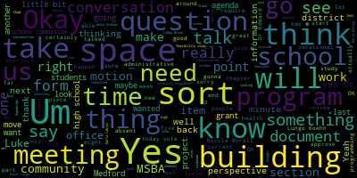
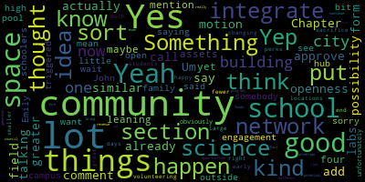
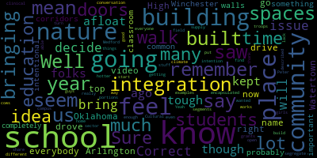
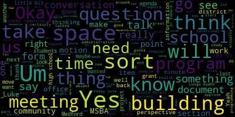
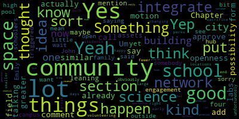
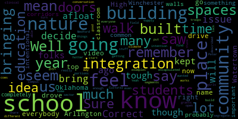

total time: 35.93 minutes
total words: 5381

{kind=link}
total time: 2.73 minutes
total words: 397

{kind=link}
total time: 3.55 minutes
total words: 408

{kind=link}
total time: 0.31 minutes
total words: 41

[SPEAKER_16]: Yeah. it. Libby, can you hear us now? You can hear me? It's a little funky, but yeah. It's really funky. I can't hear anything, I don't think. Can you hear me?
[Brown]: I can hear you, Marta. I can hear you perfectly. Can you hear me?
[SPEAKER_16]: We hear your sound, but it sounds like a garbled robot. All right. Excuse me.
[SPEAKER_04]: Yeah, yeah.
[Brown]: I think you sound better now. Yeah, I heard something that was intelligible.
[SPEAKER_14]: Libby, can you hear us now?
[Brown]: Yeah, that's great.
[Preisner]: And are we all connected? We're good? Great. OK.
[Graham]: All right, so please be advised that on June 4, 2024, from 6 to 8, there'll be a meeting of the Medford Comprehensive High School Building Committee held at Bistro 489, Medford Vocational Technical High School, 49 Winthrop Street and via remote participation for the community. This meeting is being recorded. The meeting can be viewed live on Medford Public Schools YouTube channel through Medford Community Media on your local cable channel. um, Comcast channel 98 or 22 and Verizon channel 43 45 or 47. The meeting is will be recorded. Participants can log in by using the following zoom meeting I d 95298098294. Um, so we can go ahead and get started. I'm just gonna do a quick roll call. Um, Jenny Graham here, Mayor Lungo-Koehn here. Dr. Edouard-Vincent, Dr. Galussi, on her way. Dr. Cushing, here. Marta Cabral, here. Libby Brown, here. Marissa Desmond, here. Maria Dorsey, here. Brian Hilliard, here. Tracy Keene, here. Emily Lazzaro, here. Nicole Morell, here. Aaron Olapade, here. Luke Prisner, here. Larry Brown, here. Bob Dickinson, Fiona Maxwell, Joan Bowen, Tom Dalton, Chad Ballin, Lori Hodgson, John McLaughlin, Paul Rousseau, Phillip Santos, absent. Okay, so we have 14 present, one absent, and we're ready to go. Okay, the first item on the agenda is the consent agenda and approval of minutes for the 513 full committee meeting and the 529 finance subcommittee meeting. There are two corrections that need to be made to member Morell's name. Nicole Bramley was transposed for Nicole Morell, so we'll make those updates. is there, before we take a motion to approve, just a reminder, the finance subcommittee in particular, if you were not present at the meeting, join us.
[SPEAKER_16]: Yeah. Yeah. Yeah. Yeah.
[Brown]: We hear just like gobbledygook, but not words. So we can hear the mic is on. It's just not intelligible.
[Hilliard]: Middle, so it's a little closer. It's talking to.
[SPEAKER_14]: Can you hear us now?
[Brown]: Yeah, that's better. OK.
[SPEAKER_14]: Still better? Marta, Marissa, how is it for you guys? Sounds the same.
[Brown]: It could wear a bad way. In a bad way.
[SPEAKER_16]: We're lighting up, so just trying to figure it out.
[SPEAKER_14]: Libby, can you hear us now?
[Brown]: That's better. I can at least understand you.
[SPEAKER_14]: Okay, just take it. We'll take it. Okay.
[D'Orsi]: How's that? That's good. Thank you. Yes.
[SPEAKER_13]: All right.
[SPEAKER_16]: Perfect.
[Graham]: Okay, so as I was saying, I don't know what you all were able to hear, so I'm just going to repeat what I said. The finance subcommittee was streamed to YouTube, so if you weren't at the meeting, I would encourage you to watch. Alicia Hunt from our planning office joined us, and we had a good conversation about potential sites for the high school should this site not be the one that is desirable from a planner's perspective. So it just was like a really sort of interesting conversation. Particularly, we talked a lot. We talked a little bit about transportation. And her planner's hat says that transportation should not be the reason we do or don't do something with the building, because transportation can be moved to align with where the building ultimately resides. So just like good information, more sort of like fact finding and starting to engage the right people that I would recommend everybody listen to if they have a minute. There are two amendments that do need to be made to correctly list Nicole Morell in both the minutes and in the motion. And then other than that, I will look for a motion to approve the consent agenda. There are no other objections. Motion approved by Mayor Lungo-Koehn, seconded by Dr. Edward Vinson. Okay, roll call. Jenny Graham, yes. Mayor Lungo-Koehn, yes. Dr. Edward Vinson, yes. Suzanne Galusi, yes. Dr. Cushion? Yes. Marta Cabral? Yes. Libby Brown? Yes. Marissa Desmond? Yes. Maria Dorsey? Yes. Brian Hilliard? Yes. Tracy Keene? Yes. Emily Lazzaro?
[Lazzaro]: Yes.
[Graham]: Nicole Morell?
[Lazzaro]: Yes.
[Graham]: Erin Orapade? Yes. Luke Prisner? 14 in the affirmative, one absent. Motion, the minutes are approved. Um, the next thing on our list is actually, um, to take what I'm going to call a brief introductory tour of the building. I think there's at least some number of people who have never done that before here. Um, or maybe you've seen bits and parts of the building, but I thought it would be a good time to sort of give everyone some sort of helpful framework that says like, what even all are we talking about that goes on in this building today? And so we wanted to spend a little bit of time and we're gonna try to be back here by seven to take you all on a little walking tour of the facility. So for those of you that are on the phone and have joined us remotely, we're gonna, not take you with us so that you don't feel like you're in the Blair Witch Project as we move around the building. And we will put up a note on the Zoom just so people know that we're on a walking tour of the building and we expect to be back about seven. So for those of you who have joined us remotely, we'll see you back here at seven.
[Brown]: And I'm really starting to be sick and miss this. Is there an opportunity in the future for like Marissa and I to take a look around? Yes, absolutely. For another meeting or something?
[Graham]: Yeah, I think we'll do this more than one time because right now, again, we're like in the middle of the paperwork phase. I just thought it might be helpful at a high level, but when we start talking about you know, when we start getting into the place where we're talking about design and feasibility, there will be plenty of opportunities for us to do that again. There will be lots of opportunities even for the community to come in and do that as part of the communication plan. So yes, absolutely. But, uh, and certainly if you want to come in before then just let me know and I'll have I'll arrange it with somebody to give you a personal tour. Great.
[Brown]: Thank you.
[Graham]: Cool. Okay, so we're gonna go on a little walking tour here.
[D'Orsi]: Yeah, absolutely.
[SPEAKER_16]: It's getting worse.
[SPEAKER_04]: It's getting worse. It's all gas.
[SPEAKER_14]: I saw that when I came down.
[SPEAKER_16]: Libby, Marta. I'm here. All right. Hi, everyone. It should focus. All right.
[Graham]: So we just got back from a brief walking tour of the building. We saw just like a little bit of everything, just to give people some perspective on what all this building is about. And you know, it's pluses and minuses, I guess I'll say, and we'll leave it at that. Plus, we have lots of marble at our disposal, minus, you know, many minuses. So having... Okay, the next item on our agenda is to take a look at our chapter 74 viability form, which we looked at last time. So it's in your packet. I sent it, we sent it out yesterday. We at our 520 school committee meeting, Chad and Dr. Cushing presented to the school committee about some things that they would like to see us study from an expansion perspective. So there are four programs, auto, electrical, cosmetology and health assisting that are current programs here that are space constrained. So we are, we, the school committee unanimously approved that we study an expansion of those programs from a space perspective when we get to the feasibility study. And in addition, the school committee approved that we study dental assisting, veterinary science, criminal justice and protective services, plumbing and HVAC, and information systems, networking, cybersecurity, all as separate vocations. So five new vocational programs under study from a space perspective for the vocational school as well. So the school, MSBA requires that we follow all the rules and regs that DESE has around Chapter 74 programming. So they all require licensure. They all require like all the things that would normally have to happen. They also will ask DESE to weigh in on us studying these programs. So there's a variety of criteria, including that there's demand in the area for those programs. and that the school committee is in support of studying those programs. So we've checked all of those boxes, that presentation and the vote and the minutes will be sent to MSBA with this form. But I wanted to bring this form back to you all. I did talk to our contact at MSBA this morning, We are not required to take votes on these eligibility program documents as the school building committee, but I think it's important that this group provide their input and weigh in and take a vote. So I would like to see us do that. My hope is that if you all have any comments tonight, having reviewed this, we can take a vote to approve this document as amended, and then we will submit this document. So I just wanted to open the floor in case anybody had questions. comments, thoughts about what is here, before we move any sort of approval. Luke?
[Preisner]: So I'm going to check specialized spaces. Just want to clarify, open night is not an auditorium. It's more of a learning space to gather students together in the community. Of course, we plan out the gym, which is around the gym. Oh, that's.
[SPEAKER_14]: Other forms, other forms.
[Graham]: I was like, auditorium, auditorium is ringing a bell. Okay, sorry, this is the chapter 74 one. Yes, we reviewed it last week. And since then, or not last week, but at our last meeting, Since then, all the information has been filled out. Our proposed capacity information has been fleshed out. We've noted the school committee's support for the new programs and finished filling out the rest of this form. So I just wanted to make sure there weren't any other questions about this document.
[Preisner]: Yeah, there is a waitlist and
[Hilliard]: We did, up until last year it dwindled because our enrollment was rising, so at the same time we took less students from outside the communities. Right now we can't take any because we're small. can't take it.
[Ruseau]: Well, the only other issue is we don't get to decide.
[Graham]: Because we don't function like a standalone vocational school. Correct.
[Ruseau]: Correct. So he could bring in I will say though, a few years ago, I was bringing in folks to $200,000 a year, which is what's kept us afloat in tough times.
[Hilliard]: So, yeah.
[Graham]: So, um, I think the other sort of thing because we had this actually this conversation like very early like back in February, the first time we met, where I was like, Hey guys I need you to like really think about all these things and fill out these forms and like, we need to do a lickety split, so they haven't like kicked me out of their office just yet which is nice. but we had this conversation and I think there's like the other variables are you know yes MSBA is going to pay for a portion of the building but we also as a community are going to pay for a portion of the building and it's a much more complicated story to tell to say we're going to make it bigger than our students need and we're going to pay for that at a hundred percent because our enrollment certification won't support to be enrollment from other districts, right? So that's sort of the balance. And so we actually sort of stayed towards like the current model of if there's capacity, we would continue to take students like Chad does. And with the expansion, like the expansion that we're talking about and the new programming, I think we could see again that there's capacity across the programming, but It's a little bit hard to say I think but that was sort of the calculus as we were thinking about how like the point of view to take to put this stuff together which was like we felt like it would be too hard of a sell to the community to say let's pay 100% for the extra space for programming to tuition in which may or may not ultimately sort of get us where we need to go. So that was the conversation that we had certainly. That is just like one point of view, but that was sort of where we landed as we put this together. Other questions, comments, concerns?
[D'Orsi]: Maria? I'm not sure how accurate this is supposed to be, where the library is concerned. It does just say that it's a library with... Oh, hold your thoughts just one second.
[Graham]: This is the Chapter 74 form? No, no, you're fine. We'll get to you in just one second. So are there any other Chapter 74 questions?
[Hilliard]: I saw the last name and I remember the connection. It was for a short period of time.
[Graham]: Yeah, so there's a motion on the floor to approve this document by Mayor Lungo-Koehn. Second. Second by Member Olapade. Oh, hold on.
[Ruseau]: Don't you just remember everybody's name?
[Graham]: I feel like I could almost do it, but I wrote in my brand new notebook in the front, so I remember you all. OK, Jenny Graham, yes. Mary Lungo-Koehn, yes. Dr. Edouard-Vincent, yes. Dr. Galussi, absent. Right behind you. Dr. Galussi.
[D'Orsi]: Just say yes.
[Graham]: Just say yes.
[Lazzaro]: On the motion to approve the Chapter 74 form. Just say yes. Yes.
[Graham]: Dr. Cushing. Yes. Marta Cabral. Yes. Libby Brown. Yes. Maria Dorsey. Yes. Brian Hilliard. Yes. Tracy Keene. Yes. Emily Lazzaro. Yes. Nicole Morell. Yes. Erina Lapate. Yes. Luke Kreisner. Yes. 15 in the affirmative, zero in the negative. The form is approved. OK, Karen. So we will submit that, that will be the third of five deliverables that we are on the hook for to be on our way out of this eligibility phase. So excellent work, thank you everyone. The other document that you have in front of you is item number five on the agenda, which is the educational profile. Um, I'm going to take a few minutes and just walk through this. Um, I think there's probably a lot of questions and this is still very much a work in progress. Um, we are aiming to get this, um, updated and completed as quickly as possible. Um, and I'm hoping by next week we'll have something that's pretty darn close for you all to approve. Um, but let me walk you through what's here and maybe we can take questions like section by section. So section one talks about district-wide facilities as they exist right now. So this is to say, this is what is in the building right now. The chart that you see was widely pre-populated by MSBA. So they're trying to get a view of the whole entire district and the square footage space. We had to make some updates and some adjustments, particularly to the square footage that they had on file. So those have been updated. Item B is a description of how students progress. Oh, I'm sorry. Are there questions about? Okay.
[Preisner]: How does the science lab count? Is it an addition, reno, or is that column last passed?
[Lazzaro]: Um, we should actually, that's a good call. We'll put the science labs in that field. I can add that.
[SPEAKER_13]: Next one down.
[Hilliard]: Yeah. What is B and A, HS? Is it their form that they pre-populated? Yes.
[Graham]: Yes.
[Hilliard]: Whether it's vocational or academic.
[Graham]: I'm guessing it's, yeah, the vocational piece.
[Hilliard]: What's that?
[Graham]: Was it an agricultural school at any time? Yeah. We would love that.
[Hilliard]: Yeah, I can ask and we can clear that up.
[SPEAKER_04]: One more item. Sure. I think the 330 plus the 845
[Lazzaro]: Yep.
[SPEAKER_00]: And just so everyone's aware, these were pre-populated by them. I did update, after reaching out to the architects of the five newer schools, those numbers to be in line with what those architects said. There were minor discrepancies up to about 10,000 square feet.
[Graham]: OK, so we can double check the square footage of Medford High and the vocational school. Question B really talks about how students move through the district. So this talks about, you know, they're wanting to know things like, is it a lottery? Is it a neighborhood school? How do you move from fifth to sixth? So this narrative talks about our four elementary schools, you know, how many schools we have, and it talks about the transitions from five to six being a lottery for the two middle schools. everybody comes to Medford High and then it does talk a little bit about the freshman exploratory program as well as like how students pick into a CTE program if they're desired and then it sort of references the wait list and references our chapter 74 form. So it's just really to give the folks that are trying to get a feel for our district like how do students move about the district all the time.
[Preisner]: Is therapeutic high school a telemark Other questions about this section B?
[Graham]: Okay. Section two, this is where you'll see sort of the, again, current state. How many classrooms are considered each of these things? Um, so thank you to Marta and her team, among others who went through and counted all the spaces in the building to say, like, here are all the things that are happening in this building. We will do another review of this, but this is just to sort of tally up all of the spaces that exist in this building. Um, and then In a related question, item B talks about like, how are these spaces currently used? And there is a narrative around, as the form requests, course spaces, specialized spaces, non-traditional spaces, and class policy, class five policy, all of which are requested in the question in the form.
[Preisner]: Yes, yeah, we can add that.
[Graham]: Maria? The medium of the library?
[D'Orsi]: Yes. So this is only with the library and the CCSR, but there are multiple spaces in the library. Okay. Classrooms, labs, maybe space. Does that need to be called medium? Yes.
[Graham]: Yes, it does. So can I send this to you and have you make some edits to it and send it back to us? Okay. Thank you, Maria. Any other questions about the information in item B? We also talk a little bit on the top of page seven about the some of the rentals that happen with our community partners, as well as the central office being housed here. And all of the all of the administrative offices, the administrative offices, I believe, are another thing where they're not considered part of the school from a reimbursement perspective, but There obviously has to be an administrative space available to operate the school. So, you know, there's any number of questions about how that could happen in our like new reconfigured space, whether they stay where they are or they. perhaps move to the Curtis-Tufts because we want to co-locate the Curtis-Tufts program on this campus. So there's any number of things that the feasibility study will look at. And so the important thing for us is just to say, yes, the administrative offices are housed in this building. And at the end of all of this, they need a home. So any questions about B? Um item c again current state what is our current teaching methodology, class size policies, et cetera. So this is a description, thank you to the administrative team who has taken a lot of time to try to be complete and comprehensive about both like the teaching methodology and some of the specialized programming we have within the building, including the TLP program, the transitions program, our English learners, et cetera. We do have some conversation about technology in this section, and then some of the things that are quite limiting around reliable connectivity access to the internet, et cetera, at the bottom. Any questions about this so far? Okay, section three, is about what are we proposing? What is it that we want to see in this building? I did have a conversation with our MSBA contact today and we did I did ask some questions about what sort of the finality of what is in this document and she assured me that this is like a jumping off point so that MSBA can get a feel for the kind of building we're envisioning and that whoever we ultimately bring on as an owner's project manager or to do a feasibility study can start to learn about us through these documents that we've had to create. And the reason I was asking is because I did have a chance to go to Arlington and perhaps sometime this summer we'll try to schedule another tour with them. There were spaces in the high school that like if you asked us to fill out a document today to say what should be in this high school, like we couldn't envision that space because it's just not something any of us have ever like seen or considered as an option because it doesn't exist here. So I wanted to make sure that what we put here doesn't limit the thinking of the people who are coming in who build school buildings for a living. And they assured me that, no, this is a jumping off point. Very much, they want to know sort of where our head is at and what they're thinking about and what we're thinking about, but also that all of that visioning will happen led by the folks doing the feasibility study. So those designers will really sort of lead that charge. The other conversation that I had today was with one of our Medford High School nurses and our district physician, and they reached out knowing that we were sort of in this pipeline and process to ask about whether we should be trying to provide space for an in-school health clinic. And they talked about, Dr. Sabia talked about some of the programs that he is part of in Malden, in Everett, and in Revere, where they partner with Cambridge Health Alliance and they provide health services here that are over and above what happens in a nurse's office. And so they had some particular information and insights about the kind of space that they would need to be able to hold such a facility. Most often those programs start out as grant funded by the Department of Public Health, which sounds amazing. And so they just wanted to say like, hey like we just want to make sure you know that we're here and we're thinking about these things um so that's something that I told her like we needed to like connect back with the district administration and talk about that and figure out like if and how it should go on this form but you could you should maybe expect to see some change there on the form in the next week. So I had like a 30 minute conversation with them and my wheels were turning. And I was like, this, this is the time to say we're envisioning something like that as a possibility. We certainly want to study how to have and provide that kind of space. Questions about that, Luke?
[SPEAKER_16]: Okay. Any questions about AJ last sentence?
[SPEAKER_13]: due to the structure and the age of the building limits.
[SPEAKER_14]: Thank you. Luke, did you have a question?
[Preisner]: Yeah, so maybe just sort of wanted to speak, if it's possible, about the key aspect of the scope of this. It is focused almost entirely on security spaces, and it does not seem so scanning quickly. Any consideration of the environment, the natural environment that surrounds the school, right? So if you drop a school in the middle of the city, your surrounding environment looks a certain way. If you drop it on the edge of the fells, it looks different. Certainly there's athletic fields that have some aspect, some portion of the property. There may be a desire to have outdoor eating spaces. It didn't seem like any of that was written about, And perhaps this is a document for that. I think it is actually.
[Graham]: Yeah, no, I think that's a great suggestion. We can add all of that in. And then If any of you, the McGlynn Playground project is under construction right now. And it actually is an amazing use of outdoor space, and particularly for outdoor classrooms, et cetera. So keep your eyes on that project. It's supposed to be done sometime this summer, hopefully before school starts. But it is really stunning. And the outside space is very, very amazing. be thinking about that, too. And at one point, if I remember, we went after a big grant. This was years ago, because it was before Chad's time. Suzanne was at the Brooks, Joan you were here, and it was the entire grant was written to become a like very Fells-centric educational program. Does that ring a bell to you all? It was a high school grant. I don't know if it was through Bloomberg Foundations or it was some big, big, big grant where like it would have re-envisioned this building and it was architected by Heidi Riccio and I forget, Edward, no. Perella, thank you, Mr. Perella. And they submitted this very significant grant that had a lot to do with sort of being anchored to the fells as like a central like teaching point. Does that ring any bells to anybody who's been around for a long time?
[SPEAKER_01]: Not to the structure, but I know that there was work done to create like trails within the fells and to create some outdoor space within the fells, but I don't know.
[Graham]: This was just a grant application, like we didn't get it. It was a grant application and we didn't get the grants, but there was something submitted. So I just I wonder if there is something in there if we can locate it that would be worth thinking about in terms of inclusion from an outdoor space perspective, because if I remember correctly, the whole entire like genesis of the program they were proposing had to do with like being very anchored to the fact that the fell sat right here. Nicole? Oh, sorry.
[SPEAKER_00]: You can go first.
[SPEAKER_04]: I don't know, I'm a little, the building itself, I guess, for the design, it's gonna be sustainable, resilient, blah, blah, blah. How much of the outdoor space do we have to come up with and ask for, as far as like resiliency and mitigation, or is that being tangible?
[Graham]: I think it can't hurt for us to describe our intentions, right? Like that we, you know, that we do have climate concerns on this, on this physical site, right? Like we have had issues because we sit right by the belt and every now and again the water pours in. But I think to your point and to Luke's point, like we certainly need to make some space in this document to talk about the fields that are up high. They are at their end of life. They're like more rubber than grass at this point. So those fields need to be taken care of. There is a football practice field that's very much in disrepair. There's another practice field up there that I'm sure somebody will tell me has a name and I don't know what it is. But there are all these other like little things all over the campus. And I think if like we were like dreaming really big, you wouldn't have to go across town to get to the football stadium. You wouldn't have to go somewhere else to get to a softball field or a baseball field or a track, right? So maybe some sort of, maybe we can add something that talks about a more cohesive vision for our athletics properties as part of this project that service the students here. Paul?
[Ruseau]: And on top of that, I feel like I can't remember if it was the Oklahoma school that we saw the video for, some of us saw, but we did go to, I've been to Arlington, I drive by the Watertown High School being built right now, and I drove by Winchester's when they were being built, and all of these schools seem to have something in common, that school is the walls, But there's no integration in nature at all. There's no, I mean, we have probably more than most of those places because we have those corridors. And I just feel like, while intentional spaces for the classroom do seem important, I just feel like students should walk through the doors of a school building and then get completely encapsulated and start to walk out the doors, like nature grants climate is getting hotter, but there's no integration with nature at all. There's no intention that the students are in and out of the building in any way in any of those schools that I described. They're very much in the clinical field. And I don't know if we have any good examples I don't know how that works.
[Preisner]: I mean, we were going to have an orchard. Shooters behind the trees. But are we going to build a facility in prison?
[Ruseau]: share if I can say, are we going to build a place?
[Lazzaro]: We already have that.
[Preisner]: Luke? So there's been a lot of discussion. Yeah. I think this could be an opportunity to perhaps establish a defining, at least exterior, character for the school. Agreed. You have the above the fouls. Yeah. We're surrounded by natural beauty. We also have a rare sort of promontory where you can see downtown from bedroom. Yeah. That's kind of special. It's rare. Somerville's Healy Middle School has it, and granted, they're not throughout by nature, but they really did a wonderful job in making that front and center when you go to school. You could do something like that too. Our surroundings could be a sort of defining aspect of at least the exterior of the school's character.
[Lazzaro]: Just a comment sort of similar to talking about the possibility of greater openness and leaning into the assets of the school. Something I'd like to mention that we could maybe integrate into section four if we're, I don't know if we're here yet, but community engagement that
[SPEAKER_14]: We're not quite there.
[Lazzaro]: Do you want me to wait?
[Graham]: Yes.
[SPEAKER_00]: Peter Greenfield Community College has a unique outdoor leadership program where students can earn an associate's degree in orienteering, canoeing, hiking. and being leaders of those types of things. Those programs really dovetail well with environmental science classes and your imagination can run wild. It's learning ropes, all these types of things that I think would dovetail nicely. It might be an opportunity for us to talk with Bunker Hill Community College as we look at our pathways for dual enrollment and other things along those lines to see if that would be a partnership that they would be interested in forging over the next couple of years, because it is only in Greenfield. And I think that type of a program here would offer a tremendous draw and it would be a great opportunity for our students here and as well as that connection with Bunker Hill.
[Graham]: So I think I've heard like a million good ideas so far and I'm wondering if there are any volunteers who might take a shot at like a paragraph or some sort of narrative about any of the topics that we've talked about so far to sort of help make light work of what is like otherwise a really heavy lift for the administration at this time of year when graduation is tomorrow and all the other things are happening before between now and the end of the year so is there I will see if I can't talk to some folks who might know where that grant application is and and you guys can go um in the can hop in Howard's Wayback Machine and um get in the time machine and see what you can come up with from that perspective. Because I know that at the time, I was like, wow, this is so amazing. And it was just really well done. So there just might be something there that helps draw that anchoring to the outside space. So we'll take a look for that to see if there isn't something that we can pull in and integrate. Tracy?
[Keene]: Jenny, you said that the finance committee talked about other locations. And let's see, based on what Lupe's talking about, this space, but when we talk about these other spaces there, are we envisioning that in those spaces? Can this, what Luke is referencing, the green and the courtyards, are those also ideal in that situation where we get so fixated on this space and then find out this is not a feasible space because of and even to urban spaces. Your concept changes and goes back to what Paul was saying. These other schools are almost feeling downtown that we are limited to our broader thinking.
[Graham]: Well, I guess my thought is there's a way for us in this document to say like, We are not tied to this location. And we have identified others that potentially are worthy of discussion. But as it relates to this location, here are some things that we would think are important if we are planning to stay here. So I think that's perfectly rational and reasonable. So if there is somebody who would like to take a crack at like the athletic spaces or the outdoor classroom spaces or the sort of anchoring to the fells, like if anyone wants to just take a shot at writing a paragraph or something and sending it to me, like I'm happy to do the integration if there are any volunteers.
[Brown]: I'm happy to write something. if you want more than one, we can always see what we... Do you have a particular topic, Libby, that you are... I think that that's a good point, that whether we're on this site or any other site, that the integration of nature or access to, you know, views and connection to the exterior is important. You know, there'll be a civil engineer and a landscape architect on the design team. So it's good to acknowledge the work that they would be doing. So I'd be happy to write. I mean, the athletic fields, I don't know as much about specifically, but I could mention that. Prioritizing them being close by and refurbished is important. Perfect.
[Preisner]: Luke? Integrated design concept that amplifies surrounding environment.
[SPEAKER_14]: Perfect.
[Ruseau]: Sure. I know that. Cultural stuff. I don't know what your conversation is. Well, Peter, we're going to get cows here, you guys.
[SPEAKER_00]: Well, I mean, in all reality, I mean, a horticulture program using shipping container growing is being done at other schools. I mean, so we didn't present horticulture at the school committee, however, I mean.
[Hilliard]: I think there's a piece of that at the end of the science, too, that I'm excited to explore. Okay. Sure.
[Graham]: Okay. Tracy, the other thing that I'm thinking about is like the very active conversation about the arts that we are having in the community at this very moment and wondering if there isn't something that we should be adding about sort of like how we're envisioning like the artistic spaces and if you might think about writing something about that. Anybody else?
[D'Orsi]: Maria? I just wanted to circle back to when you were talking about health care. You brought up paper child alliance as possibly being a partner and needing space. And I know that we are also contracting with Elliot Services for mental health and counseling. Would they also?
[Graham]: That came up as well as having space for that as well. Yeah, it was like a really exciting conversation. I was like, what about all the other schools?
[SPEAKER_16]: And they're like, slow down.
[Graham]: Yeah. So Maria, I think the other space that like could require or like, do with a little bit of love would be the library space. Could you take a crack at that? Okay.
[SPEAKER_00]: The other thing too is a few years ago during COVID, an organization out of Boston Architectural College called the TIDAVAL, Trauma Informed Design Evaluation, they developed a tool to really evaluate schools, and this group is doing a lot of work with the Uvalde School District. to really work on that school district and to really understand space and how a space may impact students' trauma. I think throughout this process, it's a Boston-based group. It would be wise for us to at least reach out and see. They did an analysis of the Andrews School as part of their developing the tool itself.
[Graham]: The other thing, Lori, that's gonna need to be sort of flushed in here is some conversation about the co-location of Curtis Tufts. So we might do with a paragraph from you about that vision, if you could work on that, Joan. Oh, okay, great.
[SPEAKER_04]: Are you saying in terms of space or velocity? Both, both. Okay.
[Graham]: Any other questions about this section so far? We've got 10 minutes to go.
[D'Orsi]: OK.
[Graham]: That's a great question. So we're scheduled to meet next Wednesday, June 12. Is it Tuesday? It's a Wednesday. It's a Wednesday. OK. So if you all could, by any means, get it to me by Friday, I can then do some integrating. And if you can't, it's OK. give it to me when you can.
[SPEAKER_13]: Yeah, yeah.
[Graham]: Midnight Friday. I'm gonna I'll work on it over the weekend. So Um, item C is, um. Still a work in progress. Um, the administrative team has some work to do to be able to describe that piece of it. Um, so that there's nothing for you all to review there. Um, and then section four is about community engagement. Um, and it talks about, um, some of the community engagement we have already done about Curtis Tufts and whether to co-locate that. It also talks about, um, some of the communications and community engagement subcommittee work, um, in terms of how we plan to engage the community in this project. And it closes, um, by saying that certainly we will need a debt exclusion to fully fund this project. Um, but I think Maria had some questions about this, right? this section for community engagement? Oh, Emily, sorry. Okay.
[Lazzaro]: Emily, sorry. Yeah, so I, I sort of what triggered my thoughts on this was what somebody said about what John was saying about the idea of the school being kind of an open campus. And I think that I would like to see something in this section that's a little bit about the idea of the space being also kind of a community hub outside of just the high schoolers. And there are a lot of community things that happen here, the community schools, the pool, the network, family network, a lot of things happen here. So, I mean, and I thought about that. obviously, and unfortunately for myself volunteering too, right? Yes, you are. So I'd be happy to put that in and integrate it. That would be great. Yeah. I do think that we have so much space here. And I know that in the early days of this building, there were more students and now there are fewer, but that if we do end up changing locations and having a smaller building, that we sacrifice one of the perks of this large space, which is that there are a lot of opportunities to use it for a lot of different community, a lot of attention for community good. It is doing that now, and it can continue to do it, and it can do even more. Paul?
[Ruseau]: Yeah, I just wanted to thank you for bringing that up. I'm not sure where it's at. I mean, Medford does lack a lot of community spaces, and we're not going to be able to supply enough for everyone. So, you know, it's about, like, how we segregate portions of this building, many different segments of it, even at a time. Because, like, those girls down here, if we find a place to put our troops, we can't do it at home. turn this into, you know, that open campus idea, I don't really know much about it because it's a lot, but the idea of the school community sector or education, community education, for all of these, there's so many more things.
[Lazzaro]: It was in like a, it was in a science club, but it was, that's, that's one of the things they do there. So like, there is a lot of potential and really just in like a city council, like it's a revenue generator to have more of these programs to bring in funds to the city. And like, these are all, these are all good things for us. Sure.
[SPEAKER_14]: Mayor, did you have your name in the air?
[Lungo-Koehn]: Just quickly, if you thought maybe to add after-school programming needs of the community, it doesn't have to be a full paragraph, but somewhere, state, Alina, how desperately we are in need of space.
[D'Orsi]: Yep.
[Lungo-Koehn]: Devils in space and things like that.
[Preisner]: that the answer's given. It's a little confusing. At first, it seems like you're answering the question. It's not until you get to the third paragraph that you answer it. But I think there's a place for the Curtis-Thompson Peaceful, but I think it follows the more direct, the establishment of the communication. grammar there, but for indication for a project. So first point of feedback is the sequence of information is not a sequence. But it can be re-sequenced to make sense. And then the second part is the stakeholders aren't really identified, but Emily sort of touches on it. There's a lot of external organizations that utilize the space, right? The residents are one stakeholder group, but a Japanese school that comes on Saturdays is another large stakeholder group. The lacrosse league that runs the field during the spring and fall, that's another stakeholder group. There's a lot of these stakeholder groups. I don't know if you necessarily have to list them all out, but you should identify that there are non-resident strong stakeholders that we would have to communicate with and engage with. If not, for any other reasons than just Those are the two items. Good.
[SPEAKER_13]: What else? We have a motion to lay this on the table.
[Graham]: Yeah, this is just a draft review.
[SPEAKER_13]: So I think we're on it until Wednesday.
[Graham]: Yes, so everybody who has been found told to write something please go ahead and send that to me, I will do the integration of that information and then we will take another look at it next Wednesday and we'll decide are we like. feeling good about it? Do we need more time? You know, how do we, you know, how do we sort of balance, you know, speed and completeness? Obviously, that's always sort of the challenge, but we're on a good track and I think all the feedback today was really great. So thank you all for, thank you for your feedback and your input. Next time we'll review this document and hopefully we'll take a first, maybe last look at the maintenance submission that has to go in. Again, doesn't require this committee's review, but I think it's important that you all know what those questions and answers are. We'll see how far we can get in the drafting of those answers and then look at that as well. The other thing I wanted to do before everyone leaves. Sorry, where's my schedule? We have scheduled still, we have a meeting on the 12th. And then we had a subcommittee meeting that was a TBD on the 20th. We then decided we would use that for the communications and community engagement subcommittee. However, I have a date with my 11-year-old nephews to take them to see the Michael Jackson musical that evening, so I cannot attend. Apparently all fifth grade boys go through that phase and we are there. So I need to move that meeting time. So I will reach out to the communications subcommittee and we'll find another time where we can have another meeting. There are two meetings on the books. It won in July, won in August. We may or may not need those. Maybe we can use those as like a tour date to go see Arlington or something like that. And I think we, depending on how far we are able to get through the other documents, like we may do a Zoom only meeting at some point before the end of June to finish our deliverables. The last deliverable is actually not an action for this group to take, but it's a vote for the city council to take to authorize the funding for the feasibility study. The mayor and I are working on that. MSBA is reviewing the proposed language that will go up on the council agenda probably the week of the 25th. but we'll keep you all posted on when that is. So it's a really, the MSBA has to approve the language, the council has to vote it very specifically, but we're all on track for that. So the last piece of what we have to do in eligibility is information that we'll work with Director Hunt's office around community growth projections. So we are working on that. So there's an enrollment piece on the school side and then there's a city piece that has to get submitted. So I am actively working with Director Hunt on that and hopefully we'll be able to get all that stuff like organized and put into the system in short order. So we're on track. Great. Okay. That is everything that I have for all of you. So just a note to say like, bear with us as we get through the rest of the scheduling of all of this. And with that, I think we're at the end of our agenda. Our next meeting is on June 12. And then my goal is to set the rest of the, my goal is to set our calendar for the fall once the school committee calendar is set, so we'll do that and then we'll set this calendar so you all can put it in your calendars. Is there a motion to adjourn? Motion to adjourn. Motion to adjourn by Luke, seconded by Tracy. Um, okay. Roll calls. Jenny Graham. Yes. Mary Lungo-Koehn. Yes. Dr. Edouard-Vincent. Yes. Dr. Lucy. Yes. Dr. Cushing. Yes. Marta Cabral.
[Brown]: Yes.
[Graham]: Libby Brown. Yes. Marissa Desmond.
[Brown]: I think she left.
[Graham]: Okay. Oh, okay. Um, Maria Dorsey. Yes. Brian Hilliard, Tracy Keene, Emily Lazzaro, Nicole Morell, Aaron Olapade, Luke Preissner. 14 in the affirmative, one absent. Meeting is adjourned. Thank you, everyone.
[SPEAKER_13]: Thank you.
|
total time: 35.93 minutes total words: 5381  |
total time: 2.73 minutes total words: 397  |
total time: 3.55 minutes total words: 408  |
total time: 0.31 minutes total words: 41 |